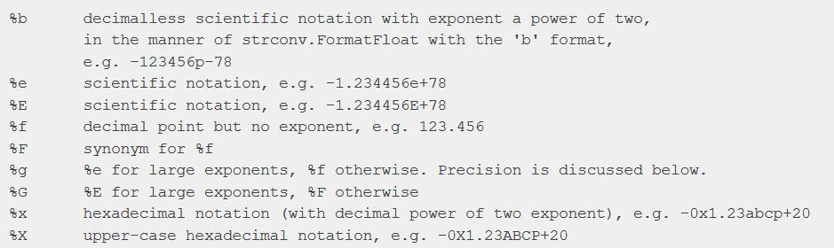

ΔΩΡΕΑΝ ΜΑΘΗΜΑΤΑ GO

Στο σημερινό δωρεάν μάθημα GO θα δούμε πως να χρησιμοποιούμε
σωστά τις functions Printf( ) και Sprintf( ) για
να μορφοποιήσουμε το αριθμητικό αποτέλεσμα της εφαρμογής μας όπως ακριβώς
το θέλουμε και κυρίως να αποφύγουμε τα πολλά ψηφία μετά την υποδιαστολή.
Αν και η GO είναι μια από τις καλύτερες γλώσσες προγραμματισμού (αν όχι η καλύτερη) για
να παρουσιάζει αριθμητικά αποτελέσματα με μεγάλη ακρίβεια, αυτό μερικές φορές
μας δημιουργεί πρόβλημα όσον αφορά τον αριθμό των ψηφίων που εμφανίζονται
στο τελικό αποτέλεσμα. Ας δούμε ένα απλό παράδειγμα για να καταλάβουμε το πρόβλημα.
main.go
package main
import "fmt"
func main() {
fmt.Println("Dividing 1 / 3 will result in:", 1.0/3.0)
}
Output
Dividing 1 / 3 will result in: 0.3333333333333333
Για να αντιμετωπίσει τα προβλήματα μορφοποίησης, η GO μας προσφέρει
την function Printf( ) η οποία ανήκει στο πακέτο fmt. Ξέρουμε ότι χρησιμοποιούμε
την σωστή function για μορφοποίηση αποτελέσματος αφού το όνομα της function
σημαίνει print with formatting. H Printf( ) function δέχεται ένα string το
οποίο περιέχει μεταβλητά σημεία που ορίζονται από συγκεκριμένους χαρακτήρες
και το σύμβολο %. Με αυτό τον τρόπο ορίζουμε πως ακριβώς επιθυμούμε να
εμφανίζεται ο αριθμός στο τελικό αποτέλεσμα. Πριν προχωρήσουμε σε ένα
απλό παράδειγμα, καλό θα ήταν να αναφερθούμε πρώτα στο documentation της
GO και να δούμε ποιες επιλογές έχουμε όσον αφορά Float αριθμούς.
https://golang.org/pkg/fmt/

Ας δούμε τώρα πως μπορούμε να χρησιμοποιήσουμε την Printf( ) στον
κώδικα από το προηγούμενο παράδειγμα έτσι ώστε να μορφοποιήσουμε
καλύτερα το αποτέλεσμα.
main.go
package main
import "fmt"
func main() {
fmt.Printf("Dividing 1 / 3 will result in: %0.2f\n", 1.0/3.0)
}
Output
Dividing 1 / 3 will result in: 0.33
Το αποτέλεσμα είναι ακριβώς αυτό που θέλαμε, αλλά πως το καταφέραμε
αυτό? Το string που γράψαμε μέσα στην Printf( ) περιέχει όλο το output. Όμως
το σημείο που αναφερόμαστε στον αριθμό το έχουμε αντικαταστήσει με %0.2f\n. Με
το σύμβολο % ενημερώνουμε την GO ότι στην ουσία θα δημιουργήσουμε ένα καλούπι
μορφοποίησης. Το γράμμα f προέρχεται από τις επιλογές που μας δίνει η GO και
ορίζει ότι θα μορφοποιήσουμε ένα float. Αν όμως γράψουμε απλά %f τότε θα
έχουμε πάλι το ίδιο πρόβλημα. Χρησιμοποιούμε λοιπόν τον αριθμό 0.2 για να
ορίσουμε των αριθμό των ψηφίων που θέλουμε να δούμε μετά την υποδιαστολή
στο αποτέλεσμα. Το 0 σημαίνει ότι ο αριθμός αριστερά της υποδιαστολής μπορεί
να περιέχει όσα ψηφία θέλουμε. Μετά την υποδιαστολή όμως ορίζουμε ότι
επιθυμούμε να δούμε μόνο δύο ψηφία. Το \n δεν έχει να κάνει την μορφοποίηση
αλλά με το γεγονός ότι η Printf δεν αλλάζει γραμμή όταν δείξει το αποτέλεσμα
όπως κάνει η Println. Οπότε ορίζουμε τον escape character \n για να δηλώσουμε
ότι θέλουμε να αλλάξουμε γραμμή μετά την εμφάνιση του αποτελέσματος.
Η Sprintf λειτουργεί με τον ίδιο τρόπο αλλά δεν τυπώνει το αποτέλεσμα στην
οθόνη αλλά το επιστρέφει πίσω στο πρόγραμμα μας. Αυτό σημαίνει ότι πρέπει
να αποθηκεύσουμε το αποτέλεσμα σε μια μεταβλητή και να τυπώσουμε στην οθόνη
την τιμή της μεταβλητής όπως μας δείχνει το πιο κάτω πρόγραμμα.
main.go
package main
import "fmt"
func main() {
resultString :=fmt.Sprintf("Dividing 1 / 3 will result in: %0.2f\n", 1.0/3.0)
fmt.Printf(resultString)
}
Output
Dividing 1 / 3 will result in: 0.33
Εκτός από την μορφοποίηση float αριθμών, έχουμε και άλλες επιλογές
όπως μπορείτε να ανακαλύψετε στο documentation της GO. Ένας πίνακας με
τις πιο συνηθισμένες επιλογές είναι ο εξής:

Ας τα δούμε όλα μαζί σε ένα παράδειγμα για να καταλάβουμε
καλύτερα την λειτουργία τους.
main.go
package main
import "fmt"
func main() {
fmt.Printf("A float: %f\n", 3.1415)
fmt.Printf("An integer: %d\n", 15)
fmt.Printf("A string: %s\n", "hello")
fmt.Printf("A boolean: %t\n", false)
fmt.Printf("Values: %v %v %v\n", 1.2, "\t", true)
fmt.Printf("Values: %#v %#v %#v\n", 1.2, "\t", true)
fmt.Printf("Types: %T %T %T\n", 1.2, "\t", true)
fmt.Printf("Percent sign: %%\n")
}
Output
A float: 3.141500
An integer: 15
A string: hello
A boolean: false
Values: 1.2 true
Values: 1.2 "\t" true
Types: float64 string bool
Percent sign: %
Στο πιο πάνω παράδειγμα, προσέξτε λίγο την μορφοποίηση που κάνουμε
με την χρήση του %#v. Το συγκεκριμένο format έχει την δυνατότητα να μας
δείχνει τιμές που είναι κρυμμένες σε ένα κανονικό output. Στο κώδικα
βλέπουμε το κενό string, το tab χαρακτήρα, και το newline που είναι
αόρατες τιμές όταν τυπώνουμε με το συνηθισμένο %v.
Περισσότερα παραδείγματα, όπως και την θεωρία μπορείτε να την
βρείτε στο documentation της
GO
(https://golang.org/pkg/fmt/#example_Printf)
Πίσω στις ενότητες GO Programming
Michail Kassapoglou Admin
Γεια σας, είμαι ο Μιχάλης Κασάπογλου και θα σας διδάξω με τον ποιο απλό
τρόπο να προγραμματίζετε σε Python. Ασχολούμαι με την τεχνική εκπαίδευση
σε διάφορες πλατφόρμες, λειτουργικά συστήματα και γλώσσες προγραμματισμού
πάνω από 20 έτη. Κατέχω έναν αρκετά μεγάλο αριθμό πιστοποιήσεων
και σαν Τraining Lead στην Intrasoft έχω την δυνατότητα να αναβαθμίζω
συνεχώς
τις γνώσεις μου και να έχω άμεση επαφή με αληθινά projects και
εξειδικευμένες
μεθόδους
ανάπτυξης εφαρμογών που έχουν υψηλές απαιτήσεις.
Για τυχόν ερωτήσεις σας μπορείτε να επικοινωνήσετε μαζί μου
στο Michail.Kassapoglou@gmail.com
Σας ευχαριστώ που επισκεφτήκατε τα δωρεάν μαθήματα προγραμματισμού GO.